Wireframe board, story #2
No favourite is marked; trade-offs only. Each variant shows default, empty and error states (see the linked file).
Sign in
Journey step: J1 step 1, J5 steps 2-3
A: free-text name field
Type a name, press Sign in. Familiar form; needs an unknown-name error path. Tab order is one field plus one button.
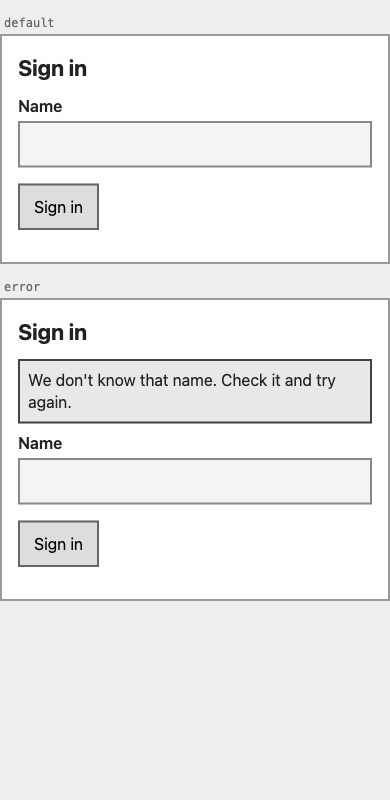
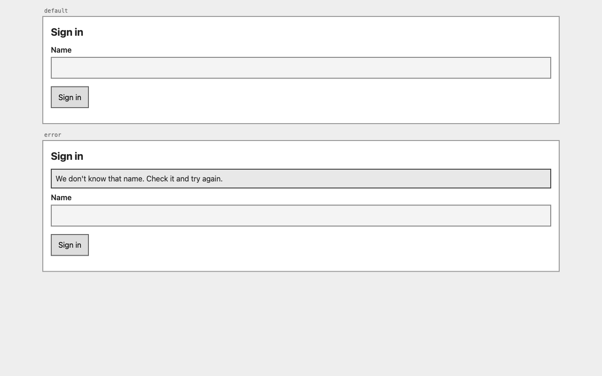
B: pick a seeded account
No typing: choose Asha or Ben. Fits dev-only placeholder auth and makes cross-user isolation easy to demo; cannot represent new users.
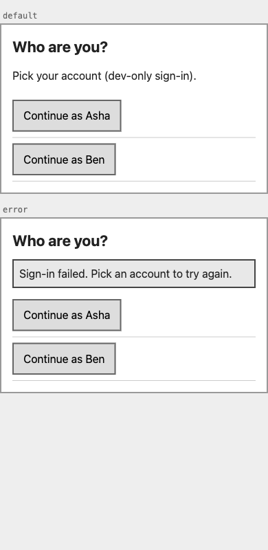
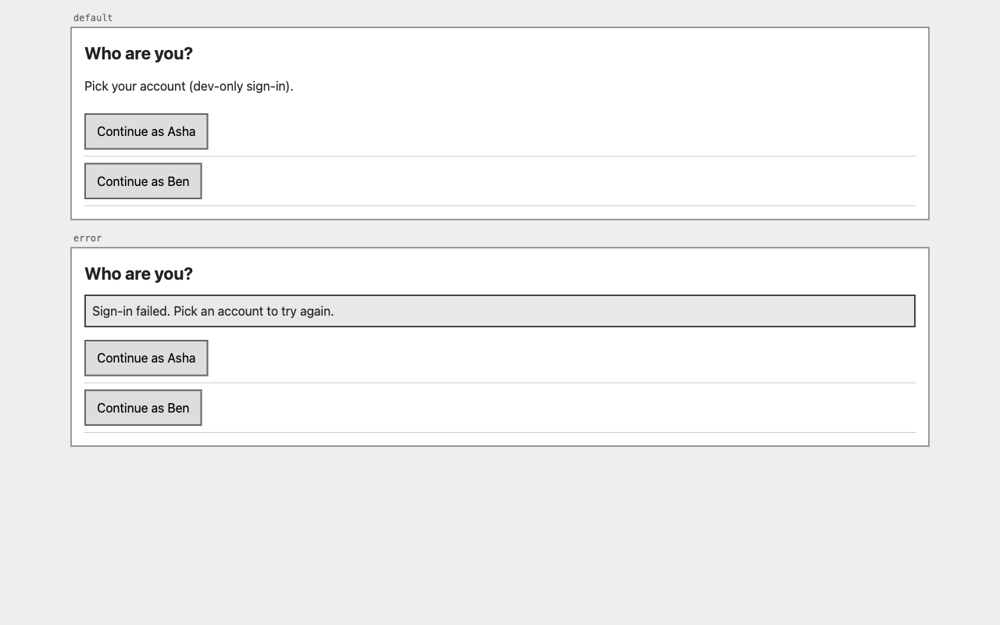
To-do list
Journey step: J1 steps 2-3, J2, J3, J5 step 3
A: single column, add on top
Open section then Completed section, always visible. Simplest reading order; completed items add scroll length.
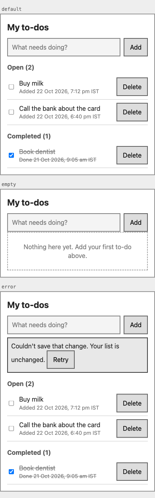
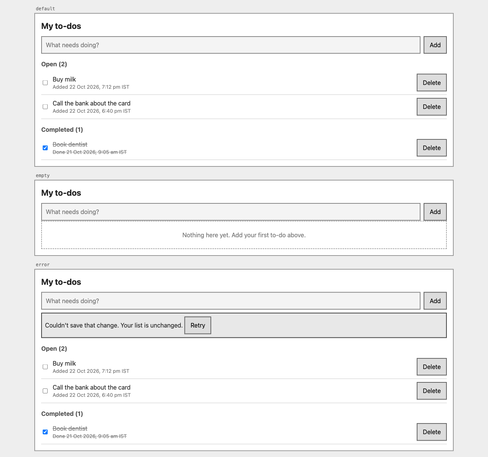
B: cards, add pinned at bottom, completed collapsed
Thumb-reach add field on phones; Completed hidden behind a disclosure, so un-completing takes one extra tap.
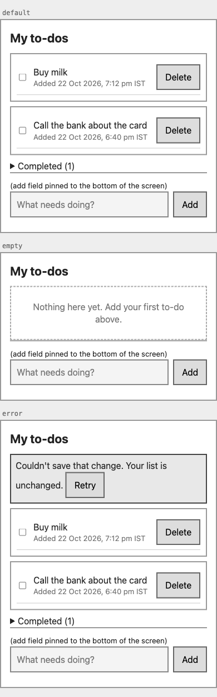
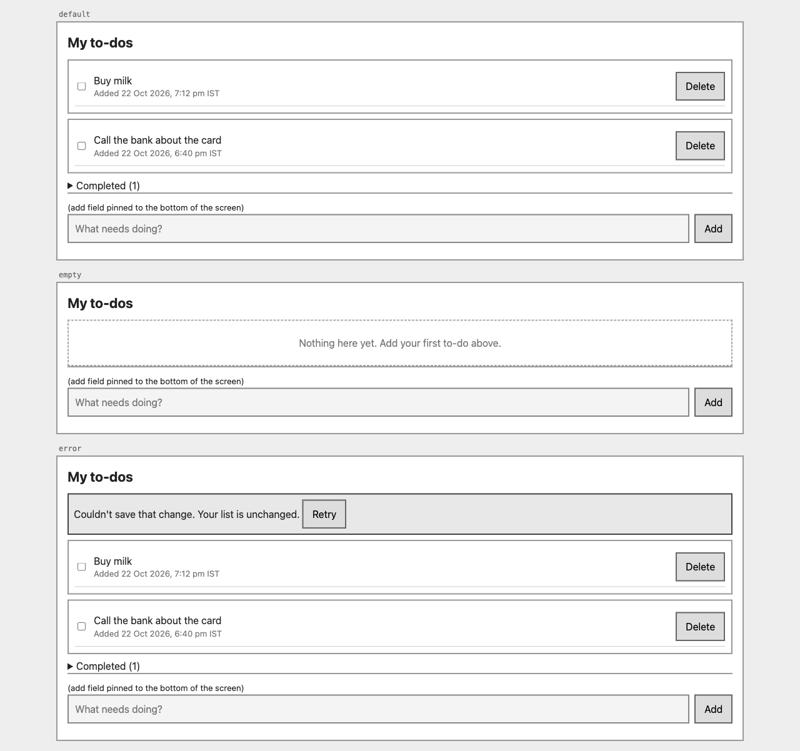
C: two columns on wide screens
Open and Completed side by side at 1280 px, stacked on a phone. Both visible at once; the layout shifts when an item moves across.
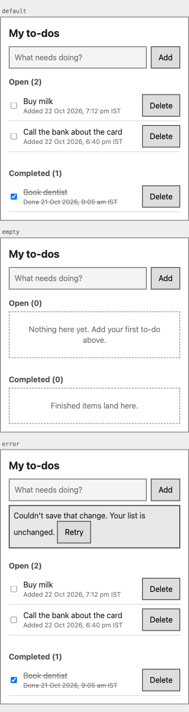
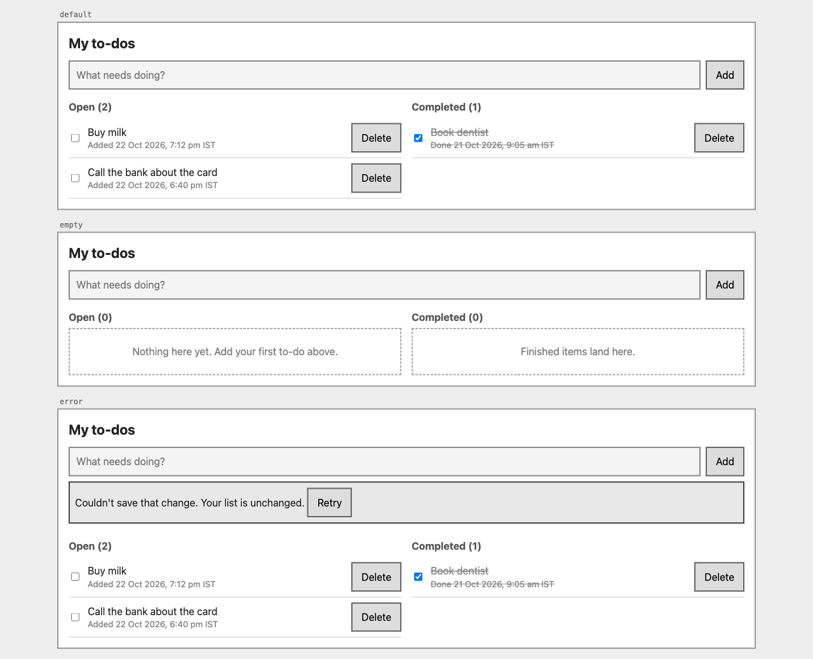
Delete confirmation
Journey step: J4 step 2
A: modal dialog
Blocks the page, names the item, Cancel and Delete. Standard and focus-trappable; interrupts the flow.
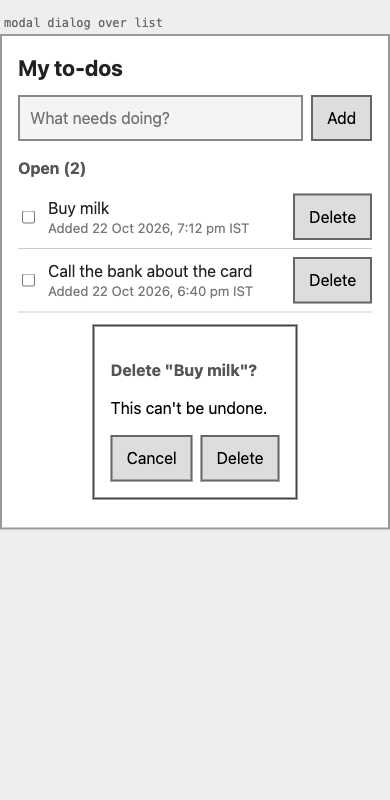
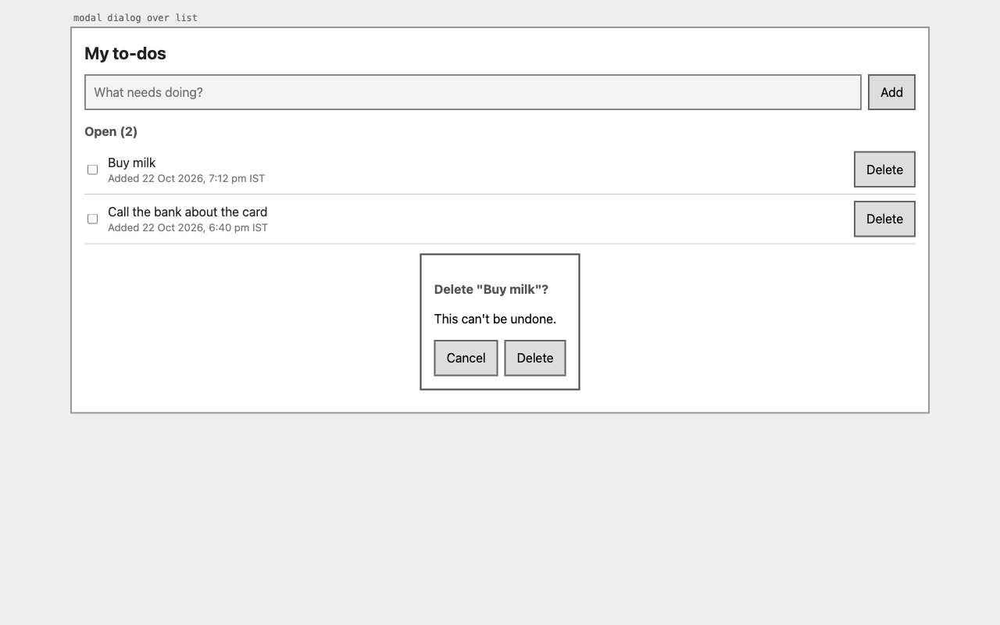
B: inline confirm in the row
The row turns into Keep / Delete. Stays in context and lighter; easier to miss, and the row changes size.
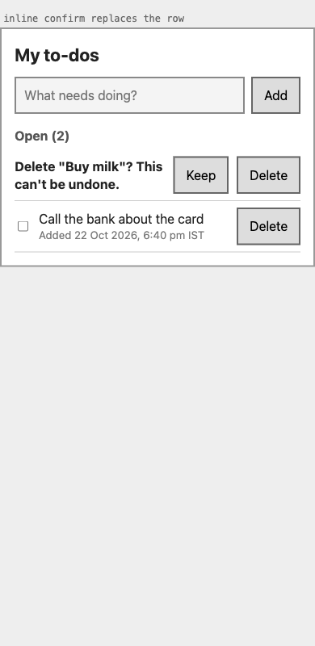
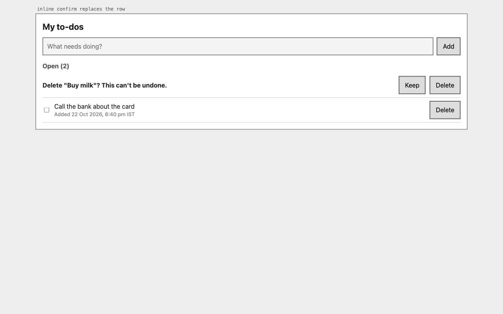